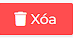
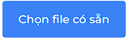

Sau khi đăng nhập với quyền Quản trị viên, hệ thống sẽ chuyển tới trang Nhập hàng.
Sau khi chuyển tới trang thành công, thông tin danh sách Nhập chất hóa học sẽ được hiện
ra:

Mỗi bản ghi sẽ thể hiện thông tin cơ bản của chất hóa học đó bao gồm Tên Hóa học,
Danh pháp, Ký hiệu, Số lượng, Hạn sử dụng, Ngày nhập, Trạng thái đơn
Tại màn hình danh sách nhập hàng, di chuột tới một bản ghi bất kì, sau đó nhấn chuột trái, sau đó ấn vào nút  để xóa chất hóa học vừa nhập ra khỏi hệ thống. Nếu
chưa chọn bản ghi nào, nút Xóa sẽ bị ẩn đi

Sau khi ấn nút Xóa, cửa sổ thông báo Xác nhận xóa hay không hiện lên, ấn nút  để xác nhận xóa, nút Hủy để hủy thao tác
để xác nhận xóa, nút Hủy để hủy thao tác
để xác nhận xóa, nút Hủy để hủy thao tác

Di chuột vào nút Nhập dữ liệu
 ở góc trái phía trên màn hình danh sách, sau đó chọn mục
Nhập dữ liệu, cửa số Thêm mới từ file có sẵn sẽ hiện ra
ở góc trái phía trên màn hình danh sách, sau đó chọn mục
Nhập dữ liệu, cửa số Thêm mới từ file có sẵn sẽ hiện ra
Tại cửa sổ Nhập dữ liệu, ấn chuột trái vào nút . Cửa sổ chọn file hiện lên, tại đây chọn file có định dạng *.xlsx để đưa vào hệ thống. Mẫu file có thể xem Tại đây

Sau khi chọn file, cửa sổ Nhập dữ liệu sẽ hiện bảng xem trước những dữ liệu có trong file đó. Sau đó ấn nút để thêm các chất hóa học có trong file vào hệ thống
để thêm các chất hóa học có trong file vào hệ thống

Tại màn hình danh sách nhập hàng, di chuột tới một bản ghi bất kì, sau đó nhấn chuột trái, sau đó ấn vào trạng thái đơn của bản ghi đó
, các trạng thái đơn sẽ hiện ra
Sau khi các trạng thái hiện ra, có 3 trạng thái Đang chờ , Đã nhận , Hủy;
Quản trị viên sẽ chọn trạng thái đơn cho bản ghi đã chọn.

Trạng thái đơn sẽ được thay đổi.
Tại màn hình danh sách nhập hàng, di chuột tới góc trái , sau đó nhấn chuột trái, sau đó ấn vào nút  để thống kê đơn hàng theo trạng thái đơn
để thống kê đơn hàng theo trạng thái đơn
để thống kê đơn hàng theo trạng thái đơn

Quản trị viên chọn trạng thái cần xem. Danh sách đơn hàng sẽ hiển thị các bản ghi theo trạng thái đã chọn.

Click chuột vào nút
để xuất danh sách nhập hàng thành file *.xlsx